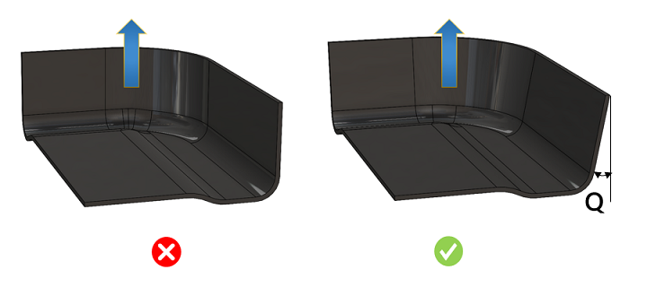

このルールは、外側面（モールド面）に対する最小抜き勾配角をチェックします。パーツの抜き方向に応じて、DFMPro は面を外側面と内側面に分類します。
真空樹脂注入成形（Vacuum Infusion Process：VIP）において、モールド面の抜き勾配とは、パーツを金型から容易に取り外すために設けられる垂直側壁のテーパを指します。適切な抜き勾配角を設定することで、金型からパーツを取り出す際の離型問題を最小限に抑えることができます。
一般的なガイドラインとして、最小抜き勾配角は 3～5 度の範囲とすることが推奨されます。

ここで、
Q = Minimum Draft Angle "最小抜き勾配角"